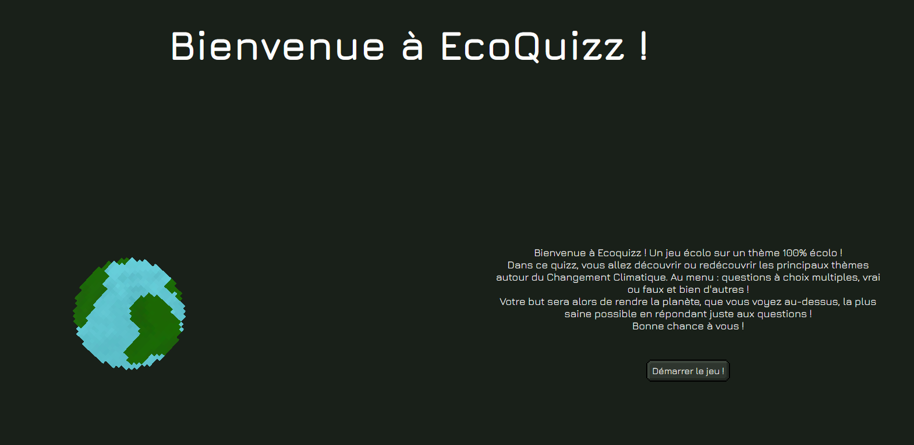

7 et 8 Décembre 2022
La Nuit de l'info est une compétition nationale de développement web. Chaque année, les équipes participent au défi principal présenté le jour même (le sujet) mais aussi à d'autres petits défis organisés par des entreprises.
Cette année, le sujet de la Nuit de l'Info était porté par l'association Réseau Action Climat.
Il fallait donc créer un site ludique de sensibilisation et débunkage des fausses informations concernant le changement climatique.
La nuit de l'info ne dure qu'une après midi et une nuit.
Pour ce qui est du site en lui-même, nous avons utilisé du HTML/SCSS et du typescript et Vue.js
Nous étions une équipe de 5 personnes comprenant de 4 étudiants de troisieme année et moi, une deuxième année.
Notre projet était site de quiz sur le sujet évoqué plus haut. Ce site implémentait une terre et une jauge de saineté influencées par les réponses au quiz. Par exemple, si l'utilisateur répondait que la source d'énergie la moins polluante était le pétrole, une petite icone pétrole cliquable apparaissait sur la terre et la jauge de saineté baissait.
Pour ma part, j'ai principalement travaillé sur les menus et sur le design du site, que nous avons voulu laisser sobre par soucis d'indice environnemental (un des défis auquel nous avons participé)
En ce qui concerne les compétences techniques, j'y ai découvert et donc appris le typescript et le Vue.js
Ce fut donc une occasion de tester ma capacité à apprendre et à utiliser mes nouvelles compétences rapidement!
Lien du site : ici